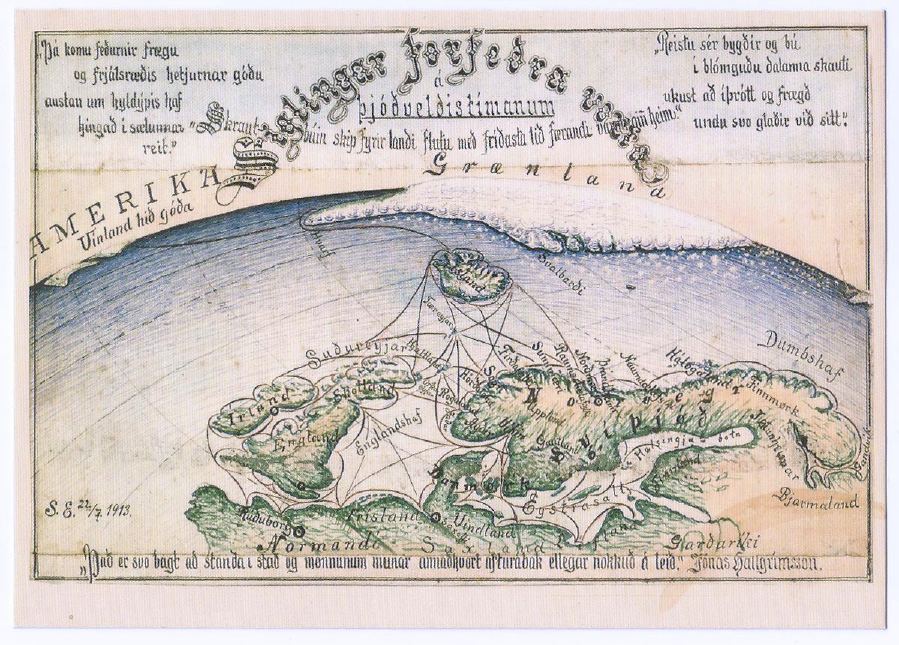
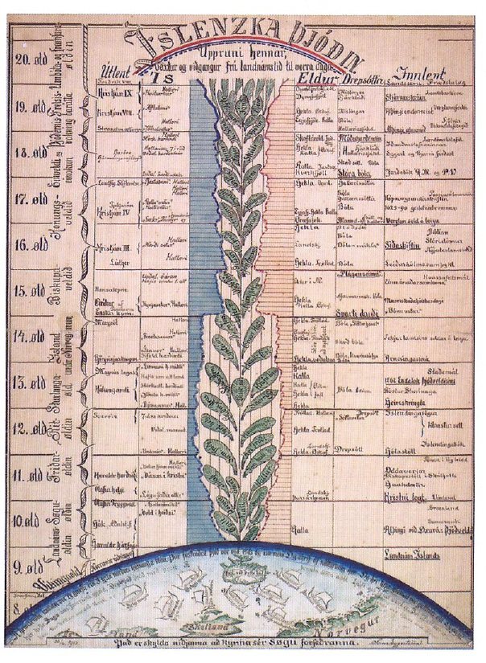
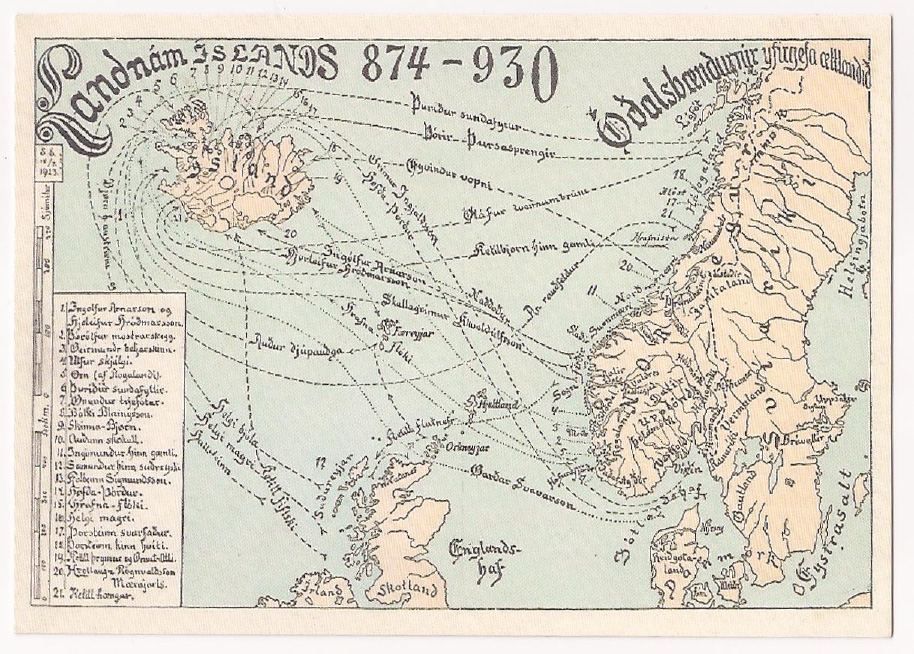

Kort geta gefið tilfinningu fyrir stað sem er í órafjarlægð eða stað sem hefur jafnvel aldrei verið til.

Kort og kortagerð hafa ætíð heillað mig þar sem mér hefur alltaf fundist merkilegt hvað kort geta geymt mikið af upplýsingum sem settar eru fram á myndrænan hátt. Í kortum koma saman ekki aðeins upplýsingar heldur einnig landafræði, hönnun, teikningar og saga. Kort geta sagt okkur sögu, um land, þjóð eða jafnvel ævintýri. Þau geta frætt okkur og um leið kveikt á ímyndunaraflinu. Kort geta gefið tilfinningu fyrir stað sem er í órafjarlægð eða stað sem hefur jafnvel aldrei verið til. Það er kannski þaðan sem áhugi minn á kortum sprettur en sem barn var ég sólgin í ævintýrabækur sem gerðustí öðrum heimum og þótti mér þá algjörlega nauðsynlegt að kort af þessum ævintýraheimi fylgdi með. Þannig varð heimurinn raunverulegri og um leið var hægt að staðsetja sig í honum, þar sem kortið veitti einhvers konar vissu um raunveruleika heimsins. Það er einmitt í þessu sem mikilvægi korta hefur falist í gegnum tíðina; möguleikanum á að staðsetja sig í heiminum.
Kortgerð hefur fylgt mannkyninu frá örófi alda. Í sinni hreinustu mynd er kort mynd af heiminum; kerfi samansett af grafískum táknum sem tákna umhverfið og fylgir þeim oftar en ekki lykill til að lesa úr táknunum – einskonar aðgangur að kerfinu.1 Ekki eru til neinar heimildir um fyrsta kortið en víst er að frá öndverðu hefur maðurinn ferðast um landið og þurft að hafa yfirsýn með þessum ferðum sínum. Bendir allt til þess að sjálfstæð þróun korta hafi átt sér stað í öllum heimshornum fyrir árþúsunum síðan, fyrir tíma ritaðs máls og áður en maðurinn gerði sér grein fyrir víðfemi veraldarinnar.2 Hlutverk korta snýst ekki bara um að vísa fólki frá einum stað til annars, heldur einnig að staðsetja manninn og setja hann í samhengi við umheiminn. Kortið verður þannig að einu mikilvægasta grunnsamskiptatóli mannkynsins.3 Allt frá því er Grikkir komust að því að jörðin væri hnöttótt4 hefur helsta vandamál kortagerðarmanna legið fyrir, en það er hægara sagt en gert að kortleggja jörðina rétt – því hvernig á að gera hnöttótt yfirborð jarðarinnar að flatri teikningu án þess að eitthvað skekkist? Þetta hefur stundum verið kallað „appelsínubarkarvandamálið“ því auðvelt er að ímynda sér þá erfiðleika sem upp koma þegar börkur er tekinn af appelsínu í heilu lagi og reynt er að fletja hann út. Í ljós kemur að það er ekki hægt nema með því að skera í börkinn eða þrýsta honum saman.5 Í þessu samhengi má einnig ímynda sér þá útkomu ef flett er húðinni utan af manneskju, hún flött út
og teiknað er eftir útlínunum – og varla getum við kallað það rétta birtingu af manneskjunni, eða hvað? Þetta hljómar ekki sérlega geðfellt en hjálpar okkur við að átta okkur á hversu bjöguð heimsmyndin verður þegar hún er flött út á þennan hátt. Ein þekktasta lausnin við þessum appelsínubarkarvanda er Merkator-vörpunin sem kom fyrst fram á sjónarsvið 1569 sem hugarsmíð Geradus Mercators (1512–1592). Vörpunin er hornrétt og var hugsuð sem kort fyrir siglingaleiðir, þannig var hægt að draga línur með reglustiku og ákvarða beinustu og stystu leiðina. Vörpunin átti eftir að festa sig í sessi og var notuð langt fram eftir tuttugustu öld. Kortið er hins vegar gallað að því leyti að flatarmál landa er virkilega misvísandi. Bjögunin á kortinu eykst eftir því sem nær dregur pólunum tveimur í norðri og suðri og gerir hún það að verkum að Grænland virðist vera á stærð við Suður-Ameríku, en í raun er heimsálfan í suðri nífalt stærri.6 Mercator-vörpun virkar ágætlega fyrir sjómenn en gefur engu að síður ansi ranga heimssýn. Til eru ýmsar aðrar kortavarpanir, sem allar eru réttar á sinn hátt en að sama skapi jafn „rangar“, þar sem aldrei verður komist fram hjá þessari bjögun.7
{kind=link}
Sama hversu „rétt“ kort er samkvæmt mælingum verður það aldrei alveg rétt vegna appelsínubarkarvandamálsins. Kort er því aldrei heimurinn sjálfur – frekar táknmynd hans. „The map is not the territory“ eða „kortið er ekki landsvæðið“ er þekkt tilvitnun eftir hinn pólsk-ameríska vísindamann og heimspeking Alfred Korzybski (1879–1950) og vísar einmitt til þessa.8 Kortið er einungis mynd af landsvæði. Hægt er að bera þetta saman við málverk René Magritte, Svik myndanna, sem sýnir mynd af pípu en undir pípunni stendur setningin: „Þetta er ekki pípa.“ Merkingin er þá einfaldlega sú að þetta sé auðvitað ekki pípa, heldur mynd eða tákn fyrir pípu,9 enda er ekki hægt að taka pípuna, setja tóbak í hana og reykja. Og eins má segja að kort sé ekki heimurinn heldur mynd af heiminum.
Kort af landi verður að táknmynd landsins og tákni fyrir þjóðina sem byggir það. Ágúst Böðvarsson segir í bók sinni Landmælingar og kortagerð Dana á Íslandi – Upphaf landmælinga á Íslandi eftirfarandi um hlutverk korta fyrir þjóðir: „Góð landakort eru á fjölmargan hátt grundvöllur menningar- og atvinnulífs hverrar þjóðar. Þau eru undirstaða þekkingar á landinu, lögun, landslagi, náttúrufari og gæðum þess […]“.10 Er leið á seinni hluta nítjándu aldar urðu landakort og landfræðileg þekking á eigin landi eitt af vopnum þjóðernissinna, tól til að sameina þjóðina og búa til eða styrkja þjóðernislega sjálfsmynd hennar.11
Benedict Anderson setti fram áhugaverða kenningu um kort af landi sem lógó eða merki, „map-as-logo“. Anderson vísar þá aftur til nýlendutímabilsins, en þá lituðu nýlenduherrar sín eigin lönd og nýlendur sínar eftir ákveðnum útlínum á kortum. Löndin urðu þannig eins og hluti af púsluspili heimsins og hvert land einstakt. Með línum og litum var hægt að aðgreina lönd hvert frá öðru og jafnvel taka þau úr púsluspilinu. Útlínur urðu þá oft að einskonar tákni eða lógói sem hægt var að nota á ýmsa vegu, til dæmis á veggspjöld, opinber innsigli, sem mynd á bréfsefni og svo framvegis.12 Útlínur landsins verða að „heima“ og stendur fyrir það sem þegnar landsins eiga sameiginlegt.13 Varð þetta oft að sterku sameiningartákni fyrir þjóðernissinna sem börðust gegn nýlenduherrum sínum.
Það virðist vera afar mikilvægt fyrir þjóðir að eiga sitt eigið landakort, eða einhvers konar myndræna framsetningu af landinu til að tengja sig við og virðist þetta meðal annars vera mjög sterkt í Íslendingum. Útlínur Íslands hafa lengi verið stór hluti af þjóðarímyndinni og eru það enn í dag. Útlínur landsins birtust fyrst um 1000 e. kr. á engilsaxneska heimskortinu í British Library. Það var þó ekki fyrr en á 16. öld á korti Guðbrands Þorlákssonar að þær fóru að líkjast eitthvað því sem við köllum Ísland í dag. Fram að því höfðu hugmyndir og teikningar kortagerðarmanna verið óljósar og mismunandi.14 Segir Einar Sigurðsson landsbókavörður eftirfarandi um hin fornu Íslandskort:
Í sögulegu ljósi eru hin gömlu landakort mikilvæg fyrir Ísland því að kortin eru til vitnis um það hvernig lítil og norðlæg þjóð varð hluti af heimsmyndinni. Kortin styrktu vitneskjuna um tilvist lands og þjóðar langt í norðri, fjarri hinni mið-evrópsku menningu fyrri tíma, og stuðluðu þannig að því að Íslendingar nytu viðurkenningar sem sérstök þjóð með eigin tungu og menningu.15
Oftast er talað um Guðbrand Þorláksson (1541–1627) og Björn Gunnlaugsson (1788–1876) sem „mestu kortagerðamenn Íslands á fyrri tíð“ þótt á milli þeirra séu ein 250 ár. Báðir voru þeir frumkvöðlar í kortagerð og báðir sáu þeir kort sín koma út á prenti sem var ekki sjálfsagt á þeim tíma.16 Um aldamótin 1800 var grunnur lagður að nákvæmari útlínum landsins þegar danskir mælingamenn hófu hér vinnu við landmælingar, en starf danska herforingjaráðsins við landmælingar á Íslandi átti eftir að endast fram á 20. öld.17 Björn Gunnlaugsson byggði sitt kort á mælingum dönsku landmælingamannanna, en það tíðkast mikið í kortasögunni að byggja á verkum annarra, því ekki er það á færi hvers sem er að fara út í yfirgripsmiklar landmælingar.

{kind=link}
Árið 1915 bað maður að nafni Samúel Eggertsson Alþingi um 1000 króna styrkveitingu til að fjármagna gerð nýs Íslandskorts sem nota átti við kennslu. Kortið byggði Samúel á mælingum danska herforingjaráðsins og Íslandskorti Þorvalds Thoroddsen. Á þessum tíma var mikill skortur á góðum landakortum til kennslu en þóttu þau ómissandi í skólastofur landsins.18 Kortið, sem oft er kallað „skólakortið“ vakti mikla lukku þegar það kom að lokum út árið 1928 og var lokagerð þess teiknuð og prentuð af danska herforingjaráðinu. Sem kortagerðarmaður var Samúel þó aldrei eins þjóðþekktur og fyrrnefndir Guðbrandur og Björn. Verk hans þykja mér þó einstaklega áhugaverð, þar sem hann gerir bæði eiginleg landakort en einnig notar hann útlínur landsins á marga vegu sem táknmynd. Þar að auki notaði hann landakort sem miðil til að koma annars konar upplýsingum fram í ritinu Saga Íslands, þ.e. hann notaði kerfi landakortsins til að setja fram sögu landsins, en meira um það síðar.
Ævistarf Samúels var barnakennsla, en kennslunni sinnti hann á veturna í 42 ár, ásamt því að vera myndskreytir, skrautskrifari, vísindamaður og kortagerðamaður. Ég tel það enga tilviljun að það hafi verið barnakennarinn Samúel Eggertson sem teiknaði landakort af Íslandi sem kallað er „skólakortið“. Séu önnur verk Samúels skoðuð má glöggt sjá að Ísland er meginþáttur verka hans, hvort sem það eru útlínur landsins, landshættir eða saga landsins, og alltaf eru verk hans hlaðin miklu upplýsingagildi – tilgangur þeirra er að fræða. Það virðist vera svo að helsti drifkraftur Samúels hafi verið að upplýsa samtímafólk sitt með öllum leiðum mögulegum. Hann hafði óbilandi trú á mætti menntunar og þekkingar og trúði því að menntuð og upplýst þjóð gæti risið upp til fyrri ljóma:
[Þjóðin] bugast meir og meir eftir hinar hræðilegur plágur á 15. öld, má heita að [hún] sé af og til í dauðategjum allt fram á 19. öld. Þá fer að rofa til aftur. Hún lítur um öxl sér og sér sögu sínaað baki sér: fornaldarljómann og miðaldaeymdina, en jafnframt stórstígar menningarframfarir frændþjóðanna. Þetta samanlagt vekur þjóðina til fulls af mörg hundruð alda andlegum svefni og hún hefst handa og tekur til starfa undir lok aldarinnar.19
Hefði Samúel verið spurður að spurningunni „Hvað gerir þjóð að þjóð og Íslendinga að Íslendingum?“ ímynda ég mér að hann hefði svarað henni á þann veg að það væri saga og uppruni þjóðarinnar, tungumálið og síðast en ekki síst landið sjálft og birtingarmynd þess, m.a. í formi landakorta, en verk hans einkenndust af öllum þessum þáttum. Eins og áður sagði notaði Samúel útlínur Íslands og kort á ýmsa vegu. Fyrir utan skólakortið gaf hann út fjöldan allan af póstkortum með teikningum þar sem útlínur Íslands gegna lykilatriði. Póstkortin voru flest gefin út á öðrum og þriðja áratugi tuttugustu aldar, á þeim tíma þegar póstkort voru notuð til að koma skilaboðum manna á milli áður en síminn komst í almannaeigu. Þá voru póstkort nánast „eini tengiliður almennra borgara við sjónmenntir“ og mætti kalla þau sófamálverk almúgans, þar sem þau voru oft á tíðum geymd og jafnvel hengd upp á vegg.20 Þetta hefur því verið tilvalinn miðill fyrir hvern þann sem hafði það að markmiði að koma upplýsingum til sem flestra.
{kind=link}
Fyrir utan að eiga útlínur Íslands sameiginlegar þá fjallar myndefni margra póstkortanna um landnám Íslands, sem Samúel taldi eitt það allra merkilegasta við Ísland, og áleit það „heilaga skyldu sérhvers Íslendings að kynna sér þessi rit vor [Landnámabók og aðrar fornsögur]“,21 því líkt og áður segir var það hans mat að þekking á þessum þáttum sögunnar hafi eða gæti vakið þjóðina af margra alda svefni, og þar af leiðandi mögulega leitt til sjálfstæðis þjóðarinnar. Póstkortin Landnám Íslands 874–943, Landnám Íslands 874–930 – Óðalsbændur yfirgefa ættlandið og Siglingar forfeðra vorra á þjóðveldistímanum snúast einmitt öll um landnámið. Á þessum þremur kortum er Ísland staðsett ofarlega á myndfletinum og liggja allar leiðir þangað. Kortið Siglingar forfeðra vorra er teikning af hnettinum þar sem Ísland hvílir ofarlega á jarðkringlunni. Hnattstaða landsins virðist hafa verið Samúel hugleikin en með því að draga hana fram virðist hún hafa átt að ýta undir mikilvægi eða sérstöðu þjóðarinnar, en á kortunum Hilsen fra Island, Minni Íslands og Íslenska þjóðin er staðsetning landsins einmitt á þann hátt. Á þessum örfáu dæmum má sjá hvernig Samúel notaði útínur Íslands sem tákn fyrir land sem allar leiðir liggja til, lands sem hvílir efst á hnettinum, „Drottningu hafsins“22 eins og hann lýsir sjálfur eyjunni. Notkun hans á útlínum Íslands smellpassar við fyrri lýsingar mínar af því hvernig sjálfstæðissinnar notuðu útlínur landsins til að styrkja þjóðerniskennd meðal þjóðar á umbrotatímum, þar sem kortið er orðið að því tákni sem íbúar landsins eiga sameiginlegt – útlínurnar verða að „heima“. Áhugi og metnaður Samúels til að koma Íslandssögunni á framfæri náði þó lengra en þessi póstkort gefa til kynna. Eins og áður var minnst á gaf hann út ritið Saga Íslands – Línurit yfir mannfjölda þjóðarinnar ásamt hliðstæðum annálum árið 1930. Ritið veitir yfirlit yfir sögu íslensku þjóðarinnar frá landnámi og inniheldur einnig mannfjöldalíkan af þjóðinni. Sjálfur talaði Samúel um að ritið væri eins og landsuppdráttur af sögu þjóðarinnar. Saga heillrar þjóðar virðist vera yfirþyrmandi efni, en hví ætti ekki að vera hægt að kortleggja hana líkt og lönd hafa verið kortlögð í gegnum tíðina? Hér er dæminu hálfpartinn snúið við. Í stað þess að nota útlínur eða kort af Íslandi til að koma upplýsingum til skila er kortið nú orðið sá miðill sem notaður er til að setja fram upplýsingar um sögu Íslands, í tímaröð frá landnámi. Samúel réðist þannig í það verk að laga sögu Íslands að því kerfi sem landakort þurfa til að vera skiljanleg, þ.e. með því að takmarka hvað er sett fram, skipta efninu í flokka og veita lykil að kortinu svo það verði skiljanlegt. Samúel skipti því sögunni í ellefu þætti sem hann taldi mikilvægasta og sem gátu gefið einhvers konar heildarmynd af sögu þjóðarinnar án þess þó að segja hana alla. Kort hafa nefnilega ákveðið leyfi til að vera ekki hárnákvæm og segja ekki alltaf allt, enda er ómögulegt að færa hið hnattalaga form jarðkringlunnar yfir á tvívíðan flöt pappírsins án þess að upplýsingar bjagist og brenglist, svo við rifjum upp „appelsínubarkarvandamálið“. Þetta kort af sögu þjóðarinnar er því unnið eftir sömu formerkjum og landakort. Þegar heimildir um sögu Íslands eru mistraustar og saga þjóðarinnar spannar yfir 1100 ár þarf að beita sömu aðferðum og við gerð landakorta: takmarka hvaða upplýsingar eru stettar fram og skera niður svo mögulegt sé að lesa úr kortinu – kortið fær leyfi til að vera ekki hárnákvæmt.
Það verður ekki hjá því litið að kort afmarkast af kortagerðamanninum sjálfum og þekkingu hvers tíma. Líkt og fyrstu útlínur af Íslandi voru „rangar“ þá gáfu þær einhverja hugmynd af stað, eða eyju í Atlantshafinu. Líklegast var kortið teiknað eftir þeirri bestu vitneskju sem til var þá. Er þá hægt að kalla það rangt? Kort og útlínur Íslands eftir Samúel litast einnig af samtíma hans. Mér þætti erfitt að treysta landakorti frá 1930 og áætla að það innihéldi fullkomlega réttar upplýsingar. Sama má segja um þær upplýsingar sem Samúel dregur fram í Sögu Íslands, en þær upplýsingar sem hann dregur fram þar litast mjög af þeirri söguskoðun sem viðgekkst við byrjun tuttugustu aldarinnar. Vel mætti uppfæra og endurskoða þá flokka sem hann ákvað að væru mikilvægastir. En það er einmitt það sem kortagerðamenn eiga að gera, vinna ofan í verk hvers annars, betrumbæta og uppfæra svo kortið sé sambærilegt þeirri þekkingu sem til staðar er og geti miðlað þeirri þekkingu áfram á sem bestan hátt.